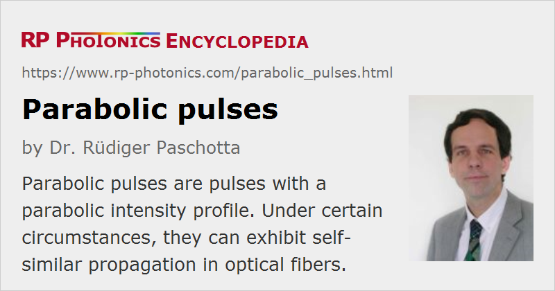

Parabolic Pulses
Definition: pulses with a parabolic intensity profile
More general term: light pulses
German: parabolische Pulse
Categories: nonlinear optics, light pulses
How to cite the article; suggest additional literature
Author: Dr. Rüdiger Paschotta
A parabolic pulse is an optical pulse (usually an ultrashort pulse) that has a temporal intensity profile with a parabolic shape – not only near the pulse center, but also well towards the wings up to the point where the intensity goes to zero. In the ideal case, the pulse would have an intensity profile according to
Figure 1 shows an approximately parabolic pulse, as it can result from pulse propagation in a fiber amplifier under certain circumstances. Parabolic pulses have a number of remarkable properties, which have turned out to be particularly important in the context of fiber amplifiers for generating high-energy ultrashort pulses.
Up-chirped parabolic pulses can be generated in a fiber amplifier where the amplified pulses not only experience optical gain, but also the Kerr nonlinearity and normal chromatic dispersion. In this situation, a chirped parabolic pulse is the asymptotic solution for long propagation lengths [3, 8]. After a sufficiently long propagation length, associated with a sufficiently large amplification factor, the shape of the resulting pulses no longer depends on the shape or duration of the seed pulses, and the peak power and duration after a long propagation length depend only on the seed pulse energy. This is a case of self-similar pulse propagation, since the parabolic pulse shape, although not the pulse duration, is preserved. Therefore, such pulses are sometimes called similaritons. The pulse duration parameter is
where g is the exponential gain coefficient, and the full bandwidth (not the full width at half maximum) is
Both grow with the cubic root of the pulse energy Ep, so that the time–bandwidth product of the pulses grows in proportion to Ep2/3.
The pulses have a very nearly linear up-chirp, i.e., a linearly rising instantaneous frequency, with a growth rate of the instantaneous frequency which is independent of the pulse energy:
With increasing propagation length, the peak power rises in proportion to Ep2/3. The chirp rate (in THz/ps) approaches a constant value, which is determined only by the fiber dispersion and gain per unit length. The spectral bandwidth rises in proportion to the pulse duration, i.e., in proportion to Ep1/3.
Depending on the input pulse parameters, in particular on the pulse duration and energy, the parabolic evolution may set in only after some amount of linear amplification. Therefore, the pulse duration and bandwidth do not necessarily rise by orders of magnitude even if the pulse energy is increased by several orders of magnitude. This is shown in Figure 2, where the seed pulses had 10 pJ energy and 500 fs duration. Initially, the amplification is nearly linear, but then both the bandwidth and pulse duration begin to rise significantly. Due to the increased bandwidth, dispersively compressed pulses can be significantly shorter than the initial pulses.
Note that the limited gain bandwidth of a real fiber amplifier limits the pulse energy range in which parabolic pulse amplification is possible. The parameters in Figure 2 go far beyond that limit.
Attractions of Parabolic Pulse Amplification
The remarkable properties of parabolic pulses lead to a number of technologically attractive features of fiber amplifiers for ultrashort pulses, when they are designed as “parabolic amplifiers”:
- Wave breaking is safely avoided. The pulses generated have no significant side lobes in the temporal or spectral shape.
- Such an amplifier does not require a seed source with carefully chosen pulse parameters, as these are not important provided that the amplification factor is large enough. The seed pulses may be significantly longer than the output pulses. They should not be too long, however, as otherwise the asymptotic solution is only slowly approached.
- The fiber parameters (chromatic dispersion, nonlinearity and gain) are also not critical. (This is remarkably different to schemes based on soliton effects.)
- As the amplified pulses have a nearly linear chirp, it is relatively easy to obtain nearly transform-limited pulses by dispersive pulse compression. However, higher-order chromatic dispersion of the compressor should not be excessive.
- The chirp during amplification can be an important advantage, because the amplification of transform-limited pulses could lead to excessive nonlinear phase shifts. The situation is therefore similar to that of chirped-pulse amplification, but with a lower amount of pulse stretching.
Limitations arise from the following effects:
- The limited gain bandwidth effectively limits the possible pulse energy. For ytterbium-doped fibers with standard mode areas, it is of the order of some tens of nJ – far below the saturation energy. Therefore, with a parabolic pulse one can only extract a minor part of the stored energy in the fiber. This regime is thus most suitable for amplifying pulse trains with very high repetition rates but moderate pulse energies.
- In principle, the amplified pulse could generate a high Raman gain at some longer wavelengths, so that a strong Stokes pulse would be formed, and the original pulse would be distorted. However, a high enough Raman gain for that problem is usually not reached in a parabolic pulse amplifier.
- Higher-order chromatic dispersion of the fiber and a compressor should not be too strong.
- Amplifier noise may also be relevant under certain circumstances.
To find an optimized design of a parabolic amplifier, it is advisable to study its behavior with numerical pulse propagation modeling, including the potentially disturbing effects mentioned above.
The principle of parabolic pulse amplification has also been applied to mode-locked fiber lasers [6] (similariton fiber lasers). Here, the spectral width of the circulating pulse is strongly oscillating: it increases during amplification but is reset in every round trip by some optical filter. This approach makes it possible to reach significantly higher pulse energies with potentially cheap fiber laser sources.
Questions and Comments from Users
Here you can submit questions and comments. As far as they get accepted by the author, they will appear above this paragraph together with the author’s answer. The author will decide on acceptance based on certain criteria. Essentially, the issue must be of sufficiently broad interest.
Please do not enter personal data here; we would otherwise delete it soon. (See also our privacy declaration.) If you wish to receive personal feedback or consultancy from the author, please contact him e.g. via e-mail.
By submitting the information, you give your consent to the potential publication of your inputs on our website according to our rules. (If you later retract your consent, we will delete those inputs.) As your inputs are first reviewed by the author, they may be published with some delay.
Bibliography
| [1] | D. Anderson et al., “Wave-breaking-free pulses in nonlinear-optical fibers”, J. Opt. Soc. Am. B 10 (7), 1185 (1993), doi:10.1364/JOSAB.10.001185 |
| [2] | K. Tamura and M. Nakazawa, “Pulse compression by nonlinear pulse evolution with reduced optical wave breaking in erbium-doped fiber amplifiers”, Opt. Lett. 21 (1), 68 (1996), doi:10.1364/OL.21.000068 |
| [3] | M. E. Fermann et al., “Self-similar propagation and amplification of parabolic pulses in optical fibers”, Phys. Rev. Lett. 84 (26), 6010 (2000), doi:10.1103/PhysRevLett.84.6010 |
| [4] | V. I. Kruglov et al., “Self-similar propagation of high-power parabolic pulses in optical fiber amplifiers”, Opt. Lett. 25 (24), 1753 (2000), doi:10.1364/OL.25.001753 |
| [5] | T. Hirooka and M. Nakazawa, “Parabolic pulse generation by use of a dispersion-decreasing fiber with normal group-velocity dispersion”, Opt. Lett. 29 (5), 498 (2004), doi:10.1364/OL.29.000498 |
| [6] | F. Ö. Ilday et al., “Self-similar evolution of parabolic pulses in a laser”, Phys. Rev. Lett. 92 (21), 213902 (2004), doi:10.1103/PhysRevLett.92.213902 |
| [7] | C. K. Nielsen et al., “Self-starting self-similar all-polarization maintaining Yb-doped fiber laser”, Opt. Express 13 (23), 9346 (2005), doi:10.1364/OPEX.13.009346 |
| [8] | V. I. Kruglov and J. D. Harvey, “Asymptotically exact parabolic solutions of the generalized nonlinear Schrödinger equation with varying parameters”, J. Opt. Soc. Am. B 23 (12), 2541 (2006), doi:10.1364/JOSAB.23.002541 |
| [9] | T. Schreiber et al., “Microjoule-level all-polarization-maintaining femtosecond fiber source”, Opt. Lett. 31 (5), 574 (2006), doi:10.1364/OL.31.000574 |
| [10] | A. Ruehl et al., “Dynamics of parabolic pulses in an ultrafast fiber laser”, Opt. Lett. 31 (18), 2734 (2006), doi:10.1364/OL.31.002734 |
| [11] | J. M. Dudley et al., “Self-similarity and scaling phenomena in nonlinear ultrafast optics”, Nature Phys. 3, 597 (2007), doi:10.1038/nphys705 |
| [12] | D. N. Papadopoulos et al., “Generation of 63 fs 4.1 MW peak power pulses from a parabolic fiber amplifier operated beyond the gain bandwidth limit”, Opt. Lett. 32 (17), 2520 (2007), doi:10.1364/OL.32.002520 |
| [13] | R. Paschotta, case study on parabolic pulses in an ytterbium-doped fiber amplifier |
| [14] | R. Paschotta, tutorial on "Fiber Amplifiers", part 8 on ultrafast amplifiers |
See also: fiber amplifiers, nonlinearities, chirped-pulse amplification, pulse compression, pulse propagation modeling, mode-locked fiber lasers
and other articles in the categories nonlinear optics, light pulses

This encyclopedia is authored by Dr. Rüdiger Paschotta, the founder and executive of RP Photonics Consulting GmbH. How about a tailored training course from this distinguished expert at your location? Contact RP Photonics to find out how his technical consulting services (e.g. product designs, problem solving, independent evaluations, training) and software could become very valuable for your business!
|  |
If you like this page, please share the link with your friends and colleagues, e.g. via social media:
These sharing buttons are implemented in a privacy-friendly way!